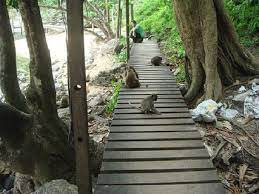

MONKEY TRAIL
The Scopes Monkey Trial started as an effort by the ACLU to challenge the constitutionality of a Tennessee law that forbade teaching the theory of evolution in public schools. The Tennessee Supreme Court found the law forbidding the teaching of evolution to be constitutional. In 1968, the U.S. Supreme Court found a similar law in Arkansas to be a violation of the First Amendment. In this photo, evangelist T.T. Martin's books against the theory of evolution are sold in Dayton, Tennessee, at the Scopes trial.AP Photo, used with permission from the Associated Press